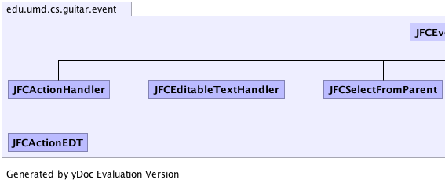
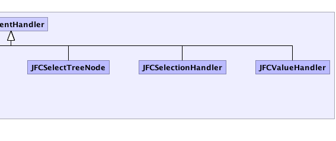

|
|||||||||
| PREV PACKAGE NEXT PACKAGE | FRAMES NO FRAMES | ||||||||
| Class Summary | |
|---|---|
| JFCActionEDT | |
| JFCActionHandler | |
| JFCEditableTextHandler | |
| JFCEventHandler | Abstract class for all JFC events in GUITAR. |
| JFCSelectFromParent | Select a sub-item by calling a selection function form its parent |
| JFCSelectionHandler | |
| JFCSelectTreeNode | |
| JFCValueHandler | |
|  |  |
|
|||||||||
| PREV PACKAGE NEXT PACKAGE | FRAMES NO FRAMES | ||||||||